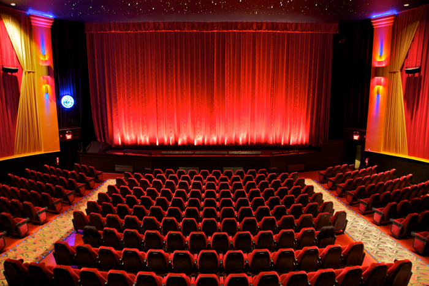

|  |
Welcome to my site about Theater! This site will explain the workings of a true theater.We will talk about backstage and the front of house. We will see how everything comes together to show off the performance of wonderful artists. We will be talking about:
Backstage is where all the magic happens. From the hustle and bustle of all the cast members running around to get to their positions for the next scene to the Stage manager who is always calm and collected to keep the show rolling. So much
The Stage Manager is the one who controls the backstage area. They are the one direct connection to the workers in the booth who are controlling lights, sound, etc. They call out the cues so the booth knows when to cue a certain instance; the start of a new scene, for example. The stage manager is there to make sure everything runs smoothly. A show could not run without a stage manager.
Technicians, AKA Techs, are the miracle workers behind the scenes. Techs are the backbone of backstage. You see techs buidling props, sewing costumes, and always fixing anything that can go wrong. Techs are there to help get the mood and the set ready so the actors don't have to worry about anything. Ther are essential to the theater.
Actors are obviously a huge part of the backstage world. Without them, all of the technicians and crew members would be working so hard for nothing. Actors are the reason we put on the shows; to show off their amazing talent. Without them, we would all be jobless.
The Front of House is a crucial part to a theater. Not only is it the place where the guests who come to see the show are located during the whole show. With that being said, there are other aspects of the Front of House that are needed to make the experience for the guest a memorable one. This is where all the (techincal) magic happens; Lighting and Sound.
Lighting is pretty important because without it, we wouldn't be able to see the show! So besides that obvious reason, lighting is used to set the mood for a certaion scene. It really helps the guests folow the story more closely and brings them closer to the show; as if they were there! Lighting can also help the guest divert thier attention at any giving moment.
Sound once again is a huge part of the theater. We all need to be able to hear what is going on the stage! SOund can be pretty tricky because it depends on how the room is built. The acoustics of the room can greatly affect the sound; mostly is bad ways. So We have to find ways to get the best sound out of a particular room by changing the levels of sound; highs, middles, and lows. To get the sound to sound like they performers are right next to you is the best thing in the world!